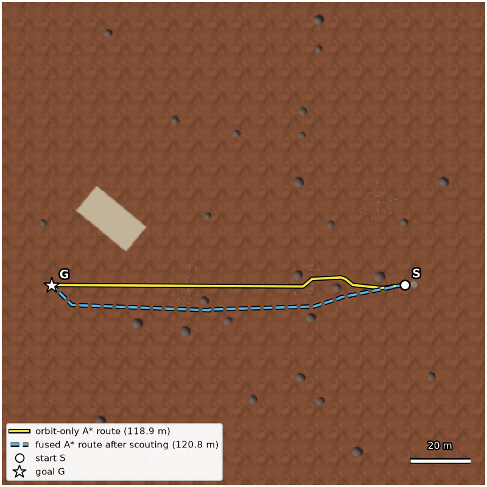
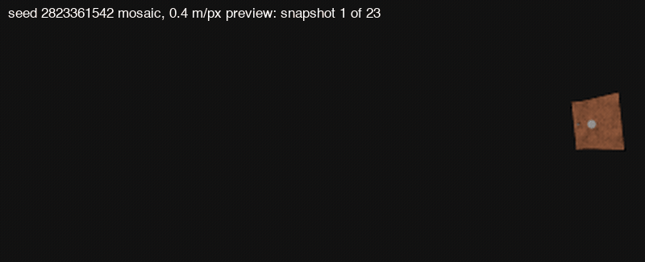
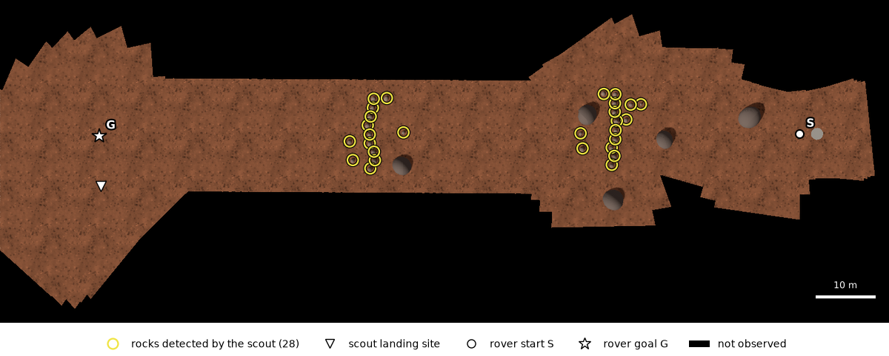
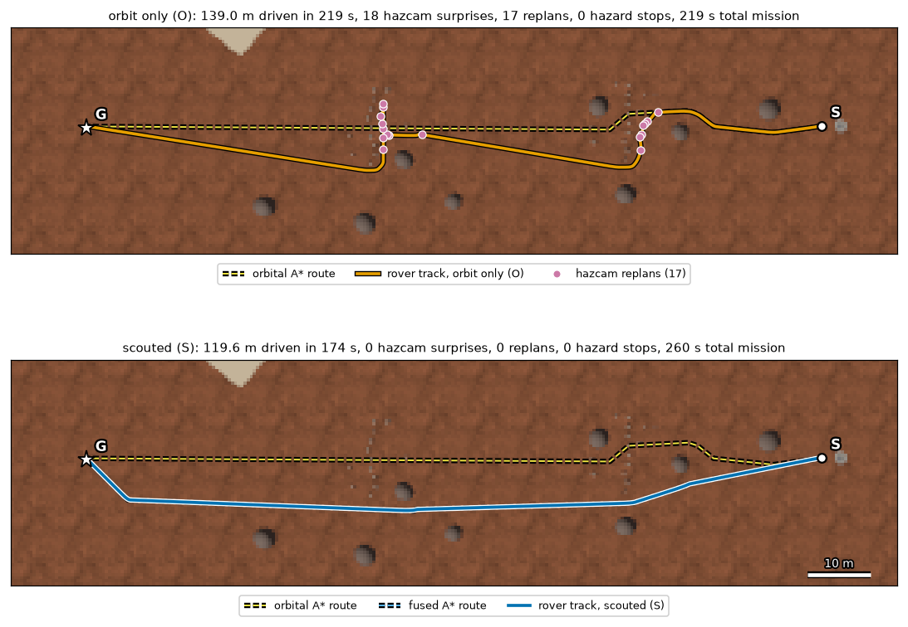

⭐ Extra Credit Opportunities
Fall 2025 archive: Option A (RTAB-Map) and Option B (SAMWISE). Added November 2026 for future offerings: Option C, Mars Helicopter Scout.
Important Information
- Total Available: 100 points maximum (50 + 50)
- Deadline: December 9, 2025 @ 11:00 PM CST
- Individual Work: Both options must be completed individually
- Submission: Via Gradescope (separate assignments for each option)
- Late Policy: No late submissions accepted for extra credit
- Both Options Allowed: You may complete both options for up to 100 extra credit points
Option C (added November 2026, for future offerings): the Mars Helicopter Scout is worth 50 points, the same as Options A and B, plus a 5-point bonus (Option C is capped at 55). It is individual work and was not offered in Fall 2025. The syllabus of the semester that offers it sets how the options combine and the overall extra-credit cap.
Reference solution: every Assignment 4 deliverable, both extra-credit options included, is shown with its status on the Assignment 4 reference deliverables page.
Option C was added in November 2026, so it is not one of that page's Fall 2025 rows; the page has one summary card for Option C, and its reference results are in Option C: Reference Results below.
📊 Choose Your Challenge
Option A: RTAB-Map 3D SLAM
50 Points
Focus: 3D Reconstruction & Visual SLAM
Key Skills:
- RGB-D sensor fusion
- Loop closure detection
- 3D map generation
- Navigation integration
Best For: Students interested in autonomous navigation and 3D mapping
View Details ↓Option B: SAMWISE Vision-Language
50 Points
Focus: Text-Driven Video Segmentation
Key Skills:
- Natural language processing
- Real-time video segmentation
- Object tracking
- Human-robot interaction
Best For: Students interested in AI/ML and vision-language models
View Details ↓Option C: Mars Helicopter Scout
50 Points (+5 bonus)
Added November 2026, for future offerings
Focus: Orbital bird's-eye-view planning and aerial scouting for a rover
Key Skills:
- Pixel-to-world mapping with camera intrinsics
- A* planning, costmaps and replanning
- Coverage flight under a time budget
- Image mosaicking and map fusion
- Paired experiment design
Best For: Students interested in field robotics, aerial-ground teams and planetary exploration
View Details ↓Option A: RTAB-Map 3D SLAM Implementation
Implement Real-Time Appearance-Based Mapping on the Husky + UR3 mobile manipulator for real-time 3D reconstruction and visual SLAM.
Point Breakdown (50 Points Total)
| Component | Points | Description |
|---|---|---|
| Installation & Setup | 5 | Successfully install RTAB-Map for ROS2 Humble/Jazzy |
| Basic RGB-D SLAM | 15 | Implement visual SLAM with RGB-D camera |
| Loop Closure Detection | 10 | Demonstrate at least 3 successful loop closures |
| 3D Map Generation | 10 | Create detailed 3D reconstruction and export point cloud |
| Navigation Integration | 5 | Use generated map for path planning with Nav2 |
| Documentation & Report | 5 | Technical report with analysis and video demonstrations |
Key Features to Implement
- Real-time 3D reconstruction from RGB-D camera data
- Loop closure detection for map consistency
- Graph optimization for global map alignment
- Multi-session mapping capability
- Integration with navigation stack for autonomous navigation
Installation Requirements
System Requirements
- Ubuntu 22.04 (ROS2 Humble) or Ubuntu 24.04 (ROS2 Jazzy)
- GPU recommended for real-time processing
- 8GB RAM minimum, 16GB recommended
- 10GB storage for map databases
Installation Commands
# Install RTAB-Map ROS2 package
sudo apt update
sudo apt install ros-$ROS_DISTRO-rtabmap-ros
# Install additional dependencies
sudo apt install ros-$ROS_DISTRO-depth-image-proc \
ros-$ROS_DISTRO-compressed-image-transport \
ros-$ROS_DISTRO-image-transport-plugins \
ros-$ROS_DISTRO-pcl-ros \
ros-$ROS_DISTRO-octomap-server
# Optional: Install RTAB-Map standalone GUI
sudo apt install ros-$ROS_DISTRO-rtabmapRequired Demonstration Scenarios
Scenario 1: Indoor Mapping
- Launch Husky in Gazebo indoor environment
- Start RTAB-Map with RGB-D camera
- Teleoperate robot through environment
- Create complete loop for closure detection
- Save 3D reconstruction
Scenario 2: Object-Rich Environment
- Add multiple objects to scene
- Map environment with detailed 3D reconstruction
- Demonstrate octomap generation
- Export point cloud for analysis
Scenario 3: Multi-Session Mapping (Optional +5 bonus)
- Create initial map
- Save database
- Restart with localization mode
- Extend map to new areas
Deliverables
Required Submission Structure
rtabmap_extra_credit_[netID]/ ├── launch/ │ └── rtabmap_husky.launch.py ├── src/ │ ├── rtabmap_controller.py │ └── loop_closure_monitor.py ├── config/ │ └── rtabmap_params.yaml ├── maps/ │ ├── rtabmap.db │ ├── map_2d.pgm │ └── cloud_map.ply ├── results/ │ ├── trajectory.txt │ └── loop_closures.csv ├── videos/ │ ├── mapping_demo.mp4 │ └── loop_closure_demo.mp4 ├── report/ │ └── technical_report.pdf └── README.md
Rosbag Recording
ros2 bag record -o rtabmap_demo_[netID] \
/camera/color/image_raw \
/camera/aligned_depth_to_color/image_raw \
/scan /odom /tf /tf_static \
/rtabmap/mapData /rtabmap/cloud_map /mapOption B: SAMWISE Text-Driven Video Segmentation
Integrate SAMWISE (CVPR 2025) for natural language-driven object segmentation and manipulation with the Husky + UR3 system.
Point Breakdown (50 Points Total)
| Component | Points | Description |
|---|---|---|
| Installation & Setup | 10 | Install SAMWISE with all dependencies and verify GPU |
| ROS2 Node Implementation | 25 | Create segmentation node with text query handling |
| Demonstration Tasks | 15 | Complete 3 required tasks (static, dynamic, custom) |
| Optional: Choose one advanced feature for +25 points | ||
| Multi-Object Tracking | +25 | Handle multiple simultaneous text queries |
| Action-Based Queries | +25 | Implement motion-dependent queries |
| MoveIt2 Integration | +25 | Complete autonomous pick-and-place pipeline |
| Custom Fine-Tuning | +25 | Train on robot-specific scenarios |
SAMWISE Architecture
- Cross-Modal Temporal (CMT) Adapter: 4.2M parameters for temporal modeling
- Conditional Memory Encoder (CME): 0.7M parameters for tracking bias detection
- Dual Prompting Strategy: Contextual and motion prompts
- Performance: State-of-the-art on MeViS (49.5%), Ref-YouTube-VOS (69.2%), Ref-DAVIS (70.6%)
- Efficiency: Only 4.9M trainable parameters (SAM2 remains frozen)
Installation Requirements
Hardware Requirements
- NVIDIA GTX 1080 (8GB minimum), RTX 3090 (24GB recommended)
- 16GB RAM minimum, 32GB recommended
- 20GB storage for models and datasets
Installation Commands
# Create conda environment
conda create --name samwise python=3.10 -y
conda activate samwise
# Install PyTorch with CUDA 11.8
pip install torch==2.3.1 torchvision==0.18.1 --index-url https://download.pytorch.org/whl/cu118
# Clone SAMWISE repository
git clone https://github.com/ClaudiaCuttano/SAMWISE
cd SAMWISE
pip install -r requirements.txt
# Optional: Memory-efficient attention
pip install xformers
# Download pretrained checkpoint (choose one)
# Download a pretrained checkpoint (CLIP-B or RoBERTa) from the link in the SAMWISE README
# and save it as checkpoints/samwise_clip.pth
# or checkpoints/samwise_roberta.pthROS2 Node Implementation
Required Functionality
Subscribers:
/camera/image_raw(sensor_msgs/Image) - Camera feed/object_query(std_msgs/String) - Text query
Publishers:
/samwise/segmentation(sensor_msgs/Image) - Segmentation mask overlay/samwise/object_centroid(geometry_msgs/PointStamped) - Object center/samwise/bounding_box(vision_msgs/Detection2D) - Object bounds
Core Features:
- Maintain SAM2 memory bank for temporal consistency
- Handle dynamic text query changes
- Process video stream at minimum 5 FPS
- Visualize results in RViz2
Required Demonstration Tasks
Task 1: Static Object Manipulation (5 pts)
- Query: "Pick up the red cube"
- SAMWISE segments red cube in camera view
- UR3 moves to grasp position based on centroid
- Gripper closes on object (1.05 for close, 0.0 for open)
Task 2: Dynamic Object Tracking (5 pts)
- Query: "Follow the moving ball"
- Husky base tracks ball centroid
- Maintains 1-meter following distance
- Handles temporary occlusions
Task 3: Custom Query (5 pts)
- Student-defined creative text query
- Must demonstrate unique SAMWISE capability
- Examples: "The person waving", "The tallest object", "The transparent bottle"
Deliverables
Required Submission Structure
assignment4_samwise_[netID]/ ├── rosbag/ │ └── samwise_demo_[netID].db3 ├── videos/ │ ├── task1_static.mp4 │ ├── task2_dynamic.mp4 │ └── task3_custom.mp4 ├── src/ │ └── samwise_ros2/ │ ├── samwise_segmentation_node.py │ └── package.xml ├── config/ │ └── samwise_params.yaml ├── report/ │ └── technical_report.pdf └── README.md
Evaluation Criteria
- Correct segmentation accuracy (IoU > 0.6)
- Real-time performance (> 5 FPS)
- Temporal consistency across frames
- Robustness to query changes
- Code quality and documentation
Paper Reference
@misc{cuttano2025samwiseinfusingwisdomsam2,
title={SAMWISE: Infusing Wisdom in SAM2 for Text-Driven Video Segmentation},
author={Claudia Cuttano and Gabriele Trivigno and Gabriele Rosi and
Carlo Masone and Giuseppe Averta},
year={2025},
eprint={2411.17646},
archivePrefix={arXiv},
primaryClass={cs.CV},
url={https://arxiv.org/abs/2411.17646},
}
Option C: Mars Helicopter Scout
Plan from orbit, scout from the air, drive on the ground. Plan a rover route on an orbital bird's-eye view, fly an Ingenuity-style helicopter stand-in over the rocks that the orbital map cannot resolve, turn its downward images into a high-resolution map, fuse the two maps and replan. Then compare against a rover that had only the orbital plan and its own hazard camera, and decide with numbers whether the flight time paid off.
Why Scout from the Air
Ingenuity as an aerial scout
NASA's Ingenuity Mars Helicopter has a mass of 1.8 kg and flies on two counter-rotating rotors, 1.2 m tip to tip , steered by swashplates that set the cyclic and collective blade pitch of both rotors . It made 72 flights between April 19, 2021 and January 18, 2024 , 128.8 minutes in the air and 17.0 km in total . Most flights peaked at 10 or 12 m (51 of 72, counted from NASA's flight log) , and the highest reached 24 m .
After its technology demonstration, NASA flew it as an operations demonstration whose goals included aerial observations of potential rover routes . On Flight 9 (July 5, 2021) it flew 625 m in 166.4 s over the Séítah dune field, terrain too risky for the rover . Mobility planners used its images to judge which areas Perseverance could traverse; the rover's detour around Séítah had already been planned . In the words of Deputy Project Scientist Ken Williford, "With Ingenuity, we now have this intermediate-scale imagery that nicely fills the gap in resolution" between orbit and the rover . On Flight 12 its images confirmed that the planned strategic route into southern Séítah was traversable , and in 2022 it helped decide which of two dry river channels Perseverance should take up the Jezero delta .
Its last flight carries a lesson for this option. On Flight 72 (January 18, 2024), about 20 s after takeoff, its vision navigation could not find enough surface features over steep, relatively featureless sand ripples . NASA's investigation found that the most likely result was a high horizontal velocity at touchdown, which snapped all four rotor blades . NASA declared the mission complete on January 25, 2024 . Option C's touchdown-speed limit and its no-landing sand patch come from that flight.
What orbit can and cannot see
HiRISE, on the Mars Reconnaissance Orbiter, takes pixels about 30 cm across from 300 km , but pixel size is not object size: HiRISE resolves the rock population that lander images show only from about 1.5 m across , and JPL's automated rock detector needs shadows about 5 pixels long (1.5 m at 0.3 m per pixel) . HiRISE has also imaged only about 4 percent of Mars (2 to 3 percent unique, as of 2022) . Perseverance's robotic operations chief engineer put it this way: "Images from Mars orbiters are valuable for strategic route planning, but not all rover hazards can be identified in them." In the Snowdrift Peak boulder field in 2023, the straight-line route was 520 m but Perseverance logged 759 m, much of the extra distance from its onboard AutoNav steering around rocks that were not visible in the orbiter images used to plan the route .
Planning from orbital images is still where routes start: on December 8 and 10, 2025, Perseverance drove 210 m and 246 m on waypoints that vision-language models generated from HiRISE images and slope data, after the commands were checked in JPL's digital twin .
What you do in Option C
You are the ground team for a 160 m x 160 m Mars test site, with three worlds seeded from your NetID. The orbital view (0.5 m per pixel) shows the boulders, 2.5 to 4 m across, and a sand patch, but not the fields of 0.4 to 0.9 m rocks that lie across the route; from 10 m the scout's camera sees each of those rocks across 9 to 21 pixels. You plan an A* route from orbit and drive it once with only the rover's hazard camera (condition O). Then, on a fresh copy of the same world, you fly up to three helicopter sorties of 90 s each, mosaic the images on the ground between sorties, fuse the maps, replan and drive again with the same rover software (condition S). Finally you compare the two runs, seed by seed.
What the Simulation Models and What It Does Not
- Matched to Ingenuity: the scout has Ingenuity's mass, 1.8 kg , and flies in Mars gravity, about 3.71 m/s2 , at cruise altitudes near Ingenuity's typical 10 to 12 m , on sorties of at most 90 s, the flight length Ingenuity was designed for .
- Four rotors, not two coaxial rotors: the scout is a four-rotor stand-in. Ingenuity uses two coaxial counter-rotating rotors with swashplate cyclic and collective control , which the Gazebo Harmonic multicopter plugins cannot model. The scout tilts and responds like a quadrotor, not like Ingenuity.
- No thin air: Mars air is about 0.016 kg/m3 , and the simulator does not model air density or rotor aerodynamics. Thrust is one coefficient, tuned so the scout hovers in Mars gravity at about 2,544 rpm, close to the 2,537 rpm Ingenuity flew on its first 13 flights .
- Orbital view: a narrow-angle perspective camera at 6000 m that gives 0.5 m per pixel over the whole site, close to orthographic. Gazebo Harmonic has no orthographic camera. The image has no orbital blur, noise or haze, and its pixel is about 1.6 to 2 times coarser than HiRISE's 25 to 32 cm .
- Helicopter camera: 320 x 240 color at 2 Hz, looking straight down. Ingenuity navigated with a 640 x 480 grayscale camera at 30 Hz .
- Navigation and hazard sensing: the core task gives you true odometry for the scout and the rover, and the rover's hazard camera is idealized (exact rock positions within 3 m, small noise). Ingenuity had no GPS: it estimated its motion from an IMU, the downward camera and a laser altimeter, with a filter that assumed flat ground . The bonus adds a designed drift, not Ingenuity's measured error.
- Ground processing: your nodes process the images between sorties, playing the ground team. Ingenuity built no map onboard ; its images reached the rover team only after downlink to Earth, where they helped judge which areas the rover could traverse and which science targets to visit .
- Flat ground: the site is a plane, so projecting images onto the ground is exact here. Ingenuity's flat-ground assumption caused heading errors over uneven terrain , and your report discusses where yours would break.
- Design values: the 90 s sortie budget, the 8 to 15 m cruise band, the 3 m/s speed cap, the touchdown rule, the rock sizes, the rover's 10 s hazard stop and the energy proxy (airborne seconds x 350 W, Ingenuity's in-flight power ) are course choices motivated by the facts above, not measurements.
Point Breakdown (50 Points Total)
| Component | Points | Grading | What earns it |
|---|---|---|---|
| C1 Bring-up and evidence integrity | 4 | Auto | Six readable bags (3 seeds x 2 conditions), each at most 25 MB, with every required topic; the seed, world hash and code hash in each bag match your NetID and your submitted code |
| C2 Orbital BEV costmap and global A* | 8 | 6 auto + 2 manual | Map orbital pixels to world coordinates from camera_info, mark boulders and the sand patch in an inflated 0.50 m costmap, and publish an A* path from S to G no longer than 1.15 times the grader's reference; BEV figure and pixel-to-world derivation |
| C3 Orbit-only baseline (condition O) | 5 | Auto | No sorties: the rover follows the orbital path, replans with your A* around hazard-camera detections, and reaches G within 900 s with zero intrusions |
| C4 Sortie planning and flight | 7 | Auto | Up to 3 sorties, each at most 90 s airborne, cruising at 8 to 15 m; each plan published before takeoff and tracked within 1.5 m RMS; no geofence or ceiling events; touchdown below 0.5 m/s on a safe site |
| C5 Nadir BEV mosaic and scout hazard detection | 8 | 6 auto + 2 manual | Project every frame with K and the full 6-DoF camera pose into a 0.10 m/px north-up mosaic that covers the flown footprint (IoU at least 0.80); small-rock recall and precision at least 0.70; mosaic figure, projection method and flat-ground discussion |
| C6 Map fusion, replanning and rover hand-off (condition S) | 8 | Auto | Fuse orbital and scout hazards into a 0.25 m costmap, replan, and drive with the same rover software: arrival within 900 s, zero intrusions, at most 1 hazard stop, at least 90% of the executed path over scouted ground |
| C7 Paired comparison, ablation and analysis | 8 | 2 auto + 6 manual | A 3 seeds x 2 conditions table that the grader reproduces, with the same rover parameters in both conditions; a prediction written before seeds 1 and 2, per-seed paired differences, an overlay figure, the discussion answers, one ablation and the limitations checklist |
| C8 Demo video, README and code provenance | 2 | Manual | A video of at most 4 minutes, a README that reproduces one run in at most 5 commands with a node/topic graph, and PROVENANCE.md; the global planner must be your own search code |
| Optional bonus (Option C capped at 55 points) | |||
| B1 Drift mode and map-relative registration | +5 | 3 auto + 2 manual | Fly seed s0 with drifting scout odometry, register the scout images to the orbital map, and build the mosaic and fused map from the corrected poses: median detection error at most 0.6 m and a safe rover arrival; method write-up with a before/after error figure |
Milestones
| Milestone | What you do | Passes when | Points banked |
|---|---|---|---|
| M0 Bring-up (practice seed 7) | Take off from the helipad, hover at 10 m for 20 s, fly 20 m, land, drive the rover 10 m, save the first orbital frame | The scout holds 9 to 11 m for at least 15 s; touchdown below 0.5 m/s; first orbital frame within 15 s; rover odometry and hazard camera publishing; no geofence or ceiling events | Not graded |
| M0b Projection unit test (calibration tile) | Hover and fly over four 1.0 m fiducial squares and project their centers with your pixel-to-ground function | Projected centers within 0.15 m of truth while hovering and 0.30 m while translating at 1 m/s | Not graded (evidence for C5) |
| M1 Orbital map, A* and orbit-only drive | Build the orbital costmap, plan with A*, drive condition O with hazard-camera replanning | At least 90% of boulders and 80% of the sand patch marked lethal; path within 1.15 times the reference length; rover reaches G within 900 s with zero intrusions | 17 |
| M2 Scout sorties | Plan and fly up to 3 coverage sorties over the uncertain corridor | Each sortie at most 90 s airborne at 8 to 15 m; tracking within 1.5 m RMS; touchdown below 0.5 m/s, at least 1.5 m from every hazard and off the sand | 24 |
| M3 Mosaic and scout detections | Project the nadir frames into a 0.10 m/px mosaic and detect the rocks | Mosaic IoU with the flown footprint at least 0.80; small-rock recall and precision at least 0.70 | 32 |
| M4 Fusion and hand-off | Fuse the maps, replan, and drive condition S with the same rover software | Fused map keeps at least 90% of boulders and 70% of scouted rocks; rover reaches G within 900 s with zero intrusions and at most 1 hazard stop, with at least 90% of its path over scouted ground | 40 |
| M5 Paired experiment and report | Run 3 seeds x 2 conditions, one ablation, the report and the video | The grader reproduces your comparison table within tolerance; identical rover parameters in both conditions of each seed | 50 |
| B1 Bonus: drift and registration | Seed s0, condition S, with drifting scout odometry; register images to the orbital map | Median detection error at most 0.6 m; rover reaches G with zero intrusions | +5 (cap 55) |
Suggested pace, about two weeks: days 1 to 3 for M1, 4 to 6 for M2, 7 to 9 for M3, 10 and 11 for M4, 12 to 14 for M5.
What You Build vs What the Starter Provides
You build (package option_c_scout)
- orbital_mapper: orbital pixels to world, boulder and sand-patch detection, inflated 0.50 m costmap
- global_planner: your own A*, Dijkstra or D* search (your Part B A* may be reused; no Nav2 planner server or library planner)
- sortie_planner: coverage under the 90 s budget, adapted between sorties
- scout_flight_controller: waypoint following, takeoff, landing-site check and touchdown
- nadir_mosaicker: ray-ground projection with the full 6-DoF pose into a 0.10 m/px mosaic
- scout_hazard_detector: rocks and boulders from the mosaic
- map_fuser: 0.25 m fused costmap with your unknown-cell policy and the landed scout
- rover_executive: path following with hazard-camera replanning, one parameter set for both conditions
- mission_manager: scout enable and mission phase events
- registration_node: bonus only
- Analysis code, report and video
The starter provides (cs498gc_a4_option_c_starter)
- Seeded world generator: three worlds from your NetID, byte-identical for the grader
- Orbital camera, the helicopter scout with its nadir camera, and a starter rover
- ros_gz bridge configuration and launch files
- Flight watchdog: command timeout, speed clamps, geofence, ceiling and a forced descent at 120 s
- Rover hazard guard and idealized hazard camera
- Grading support: odometry relay, 20 Hz clock, run info with world and code hashes
- Bonus drift model
- Bag recorder, projection checker, local checker and submission builder
hello_sortieexample flight and keyboard teleop- Docs: HANDOUT, TOPICS, FRAMES, INGENUITY_FACTS, KNOWN_LIMITS, CREDITS
/option_c/grader/, never read the generated world file or the ground-truth file in your code, and record graded bags only with record_option_c_bag. Flagged cases go to a TA for review.
Topics Your Nodes Must Publish
| Topic | Type | What |
|---|---|---|
/option_c/orbital_costmap |
nav_msgs/msg/OccupancyGrid | Inflated orbital costmap: 0.50 m cells, 320 x 320, origin (-80, -80), frame map; 99 to 100 lethal, -1 unknown |
/option_c/orbital_path |
nav_msgs/msg/Path | Your A* path from S to G on the orbital costmap, poses at most 1.0 m apart |
/option_c/sortie_plan |
nav_msgs/msg/Path | One per sortie, published before takeoff: xy waypoints with the planned altitude in z |
/option_c/scout/cmd_vel |
geometry_msgs/msg/Twist | World-frame velocity command (east, north, up, yaw rate) to the watchdog, at least 10 Hz while airborne |
/ingenuity/enable |
std_msgs/msg/Bool | True before each takeoff, false after touchdown |
/option_c/fused_costmap |
nav_msgs/msg/OccupancyGrid | Fused costmap: 0.25 m cells, 640 x 640, origin (-80, -80), published after the last touchdown, including the landed scout |
/option_c/fused_path |
nav_msgs/msg/Path | Replanned path from S to G on the fused costmap |
/option_c/rover/cmd_vel_request |
geometry_msgs/msg/Twist | Rover body-frame command to the hazard guard, streamed while driving |
/option_c/rover/active_path |
nav_msgs/msg/Path | The path the rover follows: first the orbital path (O) or fused path (S), then one per hazard-camera replan (at most 200) |
/option_c/mission_phase |
std_msgs/msg/String | JSON events with sim time: orbital_plan_ready, sortie_start, sortie_end, fused_plan_ready, rover_start, rover_goal_reached or rover_aborted |
/option_c/scout/registration_offset |
geometry_msgs/msg/PoseStamped | Bonus only: correction from the drifting odometry to your registered scout pose |
Publish /option_c/mission_phase (history depth at least 100), /option_c/rover/active_path (at least 20) and /option_c/sortie_plan (at least 5) as reliable and transient_local, like the costmaps and paths: the bag recorder needs 1 to 3 s to discover a new node and would otherwise miss your first events.
Every topic, including the ones the starter publishes for you, with rates, frames, durability and message details: docs/TOPICS.md inside the starter zip.
Simulation Setup
| Site | 160 m x 160 m of flat Mars ground, x east and y north; the ROS frame map is the Gazebo world frame. Gravity about 3.71 m/s2 |
| Orbital view | Narrow-angle perspective camera at 6000 m, 320 x 320 pixels, 0.5 m per pixel, north-up, 0.5 Hz |
| Helicopter scout | Four-rotor stand-in with Ingenuity's 1.8 kg mass ; downward (nadir) camera, 320 x 240 color at 2 Hz, 4.28 cm per pixel from 10 m |
| Flight rules | Up to 3 sorties of at most 90 s airborne each; cruise altitude band 8 to 15 m (graded ceiling 15.5 m); speed at most 3 m/s; touchdown below 0.5 m/s |
| Boulders | 25 to 40 per world, 2.5 to 4.0 m across: visible from orbit |
| Small rocks | 3 to 5 fields of 12 to 20 rocks, 0.4 to 0.9 m across: visible only from the helicopter; at least two fields lie across the orbit-only route |
| Sand patch | One per world, about 15 to 25 m by 8 to 12 m, bright and nearly featureless: a rover keep-out and a no-landing zone |
| Rover | Starter differential-drive rover (footprint radius 0.45 m, at most 1.0 m/s) or your Part B Husky (rover:=custom, not tested by the course staff); idealized hazard camera, 3 m range, ±60°; the guard stops and holds the rover for 10 s when a hazard is 0.6 to 0.9 m ahead, depending on speed; 900 s per drive |
| Seeds | Three graded worlds from your NetID; seed 7 is free practice and never graded |
| Fallback | If the multicopter plugins misbehave on your machine, launch with scout_dynamics:=kinematic and declare it in option_c.yaml; there is no penalty |
Installation Requirements
System Requirements
- Ubuntu 24.04 with ROS 2 Jazzy and Gazebo Harmonic (gz-sim 8)
- Tested by the course staff with ROS 2 Jazzy and Gazebo Harmonic on Ubuntu 24.04, headless rendering, one simulation at a time, on an amd64 laptop with an NVIDIA RTX 5080 Laptop GPU: the starter v1.0.3 tests listed in
docs/KNOWN_LIMITS.md(build and package tests, world loads, M0, M0b, the flight watchdog, the rover guard, the kinematic fallback and the bonus drift mode, each on the latest version of the code it covers) and the TA reference solution's six graded runs plus its bonus drift run on starter v1.0.3. An earlier build of the starter also passed its live tests on an NVIDIA DGX Spark (arm64); later changes were re-tested only on the laptop. ROS 2 Humble with Gazebo Harmonic, laptops with only an Intel or AMD GPU, software rendering (llvmpipe), the Gazebo GUI, the custom-rover path with a Part B Husky (rover:=custom), two simulations at the same time on one machine, macOS, Windows/WSL2 and Docker were not tested; if the cameras are slow or black, tryshadows:=falsefirst. - ROS 2 Humble with Gazebo Harmonic: gazebosim.org lists this pairing as "possible, but use with caution" (it uses the
ros-humble-ros-gzharmonicpackages, which conflict withros-humble-ros-gz*). The course staff did not test Option C on it; use Jazzy if you can.
Download
Download the starter package (v1.0.3, zip, 0.33 MB)
cs498gc_a4_option_c_starter_v1.0.3.zip, 332,640 bytes, SHA-256 57b9e2d872235c50987fb49bacffa448972a3cada28da32733aa8af065b238e4. To check your download, save the checksum file next to the zip and run sha256sum -c cs498gc_a4_option_c_starter_v1.0.3.zip.sha256 (it prints OK).
Installation Commands
# ROS 2 Jazzy on Ubuntu 24.04 first (docs.ros.org), then Gazebo Harmonic + the ros_gz bridge
sudo apt update
sudo apt install ros-jazzy-ros-gz ros-dev-tools python3-numpy python3-yaml python3-pil
# Unzip the starter into a workspace and build it
mkdir -p ~/option_c_ws/src && cd ~/option_c_ws/src
unzip ~/Downloads/cs498gc_a4_option_c_starter_v1.0.3.zip
source /opt/ros/jazzy/setup.bash
cd ~/option_c_ws && colcon build --symlink-install
source ~/option_c_ws/install/setup.bash
# Your three graded seeds (seed 7 is free practice)
ros2 run cs498gc_a4_option_c_starter option_c_seed --netid yournetid
# M0 smoke test on practice seed 7: three terminals, each starting with
# source /opt/ros/jazzy/setup.bash && source ~/option_c_ws/install/setup.bash
# terminal 1: world + TA nodes
ros2 launch cs498gc_a4_option_c_starter option_c_world.launch.py \
seed:=7 condition:=orbit_scout headless:=true
# terminal 2: record the graded topics; wait for the line that starts with
# "[record_option_c_bag] READY after" (about 4 to 10 s), and Ctrl-C after hello_sortie ends
ros2 run cs498gc_a4_option_c_starter record_option_c_bag 7 orbit_scout
# terminal 3, after READY: take off, hover at 10 m, fly 20 m, land, drive the rover 10 m
ros2 run cs498gc_a4_option_c_starter hello_sortie --save-orbital seed7_orbital_bev.png
# then, from the folder terminal 2 recorded in: PASS or FAIL for each M0 criterion
ros2 run cs498gc_a4_option_c_starter local_check --stage M0 --bag bags/seed7_orbit_scout --seed 7Deliverables
Required Submission Structure
<netid>_a4_option_c.zip (individual submission, at most 150 MB)
└── option_c/
├── README.md build + run one seed in at most 5 commands; node/topic graph
├── PROVENANCE.md external code, libraries and AI assistance, and what each was used for
├── report.pdf at most 8 pages + appendix
├── video_link.txt one URL viewable by course staff, video at most 4 minutes
├── config/
│ └── option_c.yaml netid, seeds, rover, unknown_cell_policy, inflation_margin_m, ablation_id, ...
├── src/
│ └── option_c_scout/ your ROS 2 package (its hash goes into every bag)
├── bags/ sqlite3 rosbag2 folders, each at most 25 MB, no images
│ ├── seed<s0>_orbit_only/
│ ├── seed<s0>_orbit_scout/
│ ├── seed<s1>_orbit_only/
│ ├── seed<s1>_orbit_scout/
│ ├── seed<s2>_orbit_only/
│ └── seed<s2>_orbit_scout/
├── results/
│ ├── seed<s0>/ orbital_bev.png, orbital_hazards.csv, orbital_sand_polygon.json,
│ │ scout_mosaic.png, scout_mosaic.json, scout_hazards.csv,
│ │ figures/path_overlay_O_vs_S.png, figures/mosaic_with_tracks.png
│ ├── seed<s1>/ (same files)
│ ├── seed<s2>/ (same files)
│ ├── comparison_table.csv 6 rows: 3 seeds x 2 conditions
│ ├── ablation.csv
│ └── analysis/ scripts or notebook that made the tables and figures
└── bonus_drift/ optional: bags/seed<s0>_orbit_scout_drift/ and results/
Recording and Packaging
# Keep your package in $HOME/option_c/src/option_c_scout; link it into the workspace once, then rebuild
ln -s $HOME/option_c/src/option_c_scout ~/option_c_ws/src/
cd ~/option_c_ws && colcon build --symlink-install && source install/setup.bash
# Graded runs: pass your package path so every bag carries the hash of the code you submit
ros2 launch cs498gc_a4_option_c_starter option_c_world.launch.py \
seed:=<s0> condition:=orbit_only headless:=true \
student_pkg_src:=$HOME/option_c/src/option_c_scout
# Record the graded topic list into $HOME/option_c/bags/seed<s0>_orbit_only (Ctrl-C after the rover finishes)
ros2 run cs498gc_a4_option_c_starter record_option_c_bag <s0> orbit_only $HOME/option_c/bags
# Only after the recorder prints its READY line: start your own mission nodes in a third terminal
# Check the tree, sizes, seeds and hashes, then build <netid>_a4_option_c.zip
ros2 run cs498gc_a4_option_c_starter make_submission $HOME/option_c- Order matters: start the world, then the recorder, wait for its READY line, and only then launch your mission, so the bag holds your first mission events.
- Rerun the bags after any code change: a bag whose code hash does not match the submitted package loses its auto points.
- Gradescope accepts direct uploads up to 100 MB. If your zip is larger, run
make_submissionfor its checks, push theoption_c/folder to a private GitHub or Bitbucket repository (as the repository itself or as its top-level folder), and submit that repository with Gradescope's GitHub or Bitbucket option. - Individual work. The course academic-integrity policy applies; disclose any AI coding assistance in PROVENANCE.md where the semester policy allows it.
Reference Results
Everything below comes from the course staff's reference solution (ROS 2 Jazzy and Gazebo Harmonic on an amd64 laptop with an NVIDIA RTX 5080 GPU, headless, starter v1.0.3), shown for one of its three seeds where a single seed is shown. It is not student work, and the reference code is not published. Your report needs figures like the three stills below (orbital plan, mosaic, rover traces) for one of your seeds, and results/ holds the per-seed files listed under Deliverables. Your video needs one sortie with the mosaic growing, seen from any viewpoint. The chase camera was added only to a staff media copy of the scout model: do not edit the starter models to reproduce that view.
Orbital plan and fused plan
The orbital bird's-eye view with the orbital A* path and the fused path after scouting (your own figure also marks the detected boulders and the sand patch).


A scouting sortie
The scout flying its sortie plan over the uncertain corridor at cruise altitude.

The mosaic growing
Nadir frames projected onto the ground and blended into the mosaic.

The finished scout mosaic
The 0.10 m per pixel north-up mosaic with the detected rocks (your own figure also draws the sortie tracks).


Rover traces
Both executed rover tracks, orbit-only (O) and scouted (S), with hazard stops and hazard-camera replans marked.


Comparison table
One row per seed and condition. Compare the paired differences (S minus O) for each seed, such as hazard stops, executed length, drive time, total mission time and airborne seconds, and report their mean; three seeds do not support significance claims.
Recorded by the course staff, not student submissions TA reference solution, the three seeds of the staff's reference NetID, ROS 2 Jazzy + Gazebo Harmonic on an amd64 laptop with an NVIDIA RTX 5080 GPU, starter v1.0.3. The same rover software and parameters drove both conditions. Not student results.
| Seed | Condition | Reached goal | Hazard stops | Hazcam surprises | Replans | Driven (m) | Drive time (s) | Min clearance (m) | Airborne (s) | Total mission (s) |
|---|---|---|---|---|---|---|---|---|---|---|
| 2823361542 | O | yes | 0 | 18 | 17 | 139.0 | 218.8 | 0.31 | 0 | 218.9 |
| 2823361542 | S (1 sortie) | yes | 0 | 0 | 0 | 119.6 | 173.9 | 0.92 | 80.5 | 260.2 |
| 2666837378 | O | yes | 0 | 15 | 10 | 130.4 | 210.4 | 0.51 | 0 | 210.5 |
| 2666837378 | S (2 sorties) | yes | 0 | 0 | 0 | 113.3 | 162.4 | 1.03 | 121.5 | 295.0 |
| 242666850 | O | yes | 0 | 17 | 15 | 138.7 | 223.0 | 0.41 | 0 | 223.1 |
| 242666850 | S (2 sorties) | yes | 0 | 0 | 0 | 115.5 | 165.5 | 1.21 | 129.7 | 306.5 |
| Mean of S minus O (3 seeds) | no change | 0 | -16.7 | -14.0 | -19.9 | -50.1 | +0.65 | +110.6 | +69.7 | |
Reading the reference numbers. All six drives reached the goal with zero intrusions and zero hazard stops, so on these worlds the reference rover's hazard camera and replanning kept it safe without scouting, and this table cannot show scouting preventing hazard stops. What the fused map changed was the drive itself: with scouting, the hazard camera reported no rock that was missing from the map the drive started with (15 to 18 such surprises orbit only), the rover never replanned (10 to 17 replans orbit only), and it drove 17.1 to 23.3 m less, finished its drive 44.9 to 57.5 s sooner and kept 0.53 to 0.80 m more clearance. Scouting still cost time overall: one or two sorties (80.5 to 129.7 s airborne) plus the ground time around them made the total mission 41.3 to 84.5 s longer (mean +69.7 s). Whether that trade pays off depends on what a hazard stop or a replan costs and how fast the rover drives; three seeds from one NetID support no significance claim, and your own numbers may come out either way.
The staged Option C autograder, run in an emulation of the Gradescope image, recomputed every row of this table from the reference run's bags; all six rows matched.
Resources and References
Ingenuity and Perseverance
- NASA Science: Ingenuity Mars Helicopter mission page
- NASA/JPL: Mars Helicopter Ingenuity Landing Press Kit (2021, PDF)
- Balaram et al., "Mars Helicopter Technology Demonstrator", AIAA SciTech 2018 (PDF)
- NASA: Ingenuity flight log (PDF)
- JPL: NASA's Mars Helicopter Reveals Intriguing Terrain for Rover Team (Flight 9, 2021)
- NASA blog: Driving Farther and Faster with Autonomous Navigation and Helicopter Scouting (2021)
- JPL: NASA Performs First Aircraft Accident Investigation on Another World (Flight 72, 2024)
- JPL: Autonomous Systems Help NASA's Perseverance Do More Science on Mars (Snowdrift Peak, 2023)
- JPL: NASA's Perseverance Rover Completes First AI-Planned Drive on Mars (2026)
Orbital imaging
- HiRISE camera specifications (University of Arizona)
- Golombek et al., size-frequency distributions of rocks on the northern plains of Mars, JGR Planets 114
- Ono et al., Data-Driven Surface Traversability Analysis for Mars 2020 Landing Site Selection, IEEE Aerospace 2016 (PDF)
Algorithms
- Hart, Nilsson and Raphael, A Formal Basis for the Heuristic Determination of Minimum Cost Paths (A*), 1968
- Stentz, Optimal and Efficient Path Planning for Partially-Known Environments (D*), ICRA 1994
- Ferguson and Stentz, Using Interpolation to Improve Path Planning: The Field D* Algorithm, Journal of Field Robotics 2006, and its use on the Mars Exploration Rovers: Carsten et al., Global Path Planning on Board the Mars Exploration Rovers, IEEE Aerospace 2007 (PDF)
- Mallot et al., Inverse Perspective Mapping Simplifies Optical Flow Computation and Obstacle Detection, Biological Cybernetics 1991
- Registration for the bonus: JPL Robotics: Mars 2020 Lander Vision System map-relative localization and Zubarev et al., The Complete Orthophotomosaic of Ingenuity Navcam Images, LPSC 2025 (PDF)
Simulation
- Gazebo Harmonic: installing on Ubuntu
- Gazebo Harmonic: installing with ROS 2, and which ROS and Gazebo versions pair
- ros_gz: the ROS 2 and Gazebo bridge
Credits: facts about Ingenuity, Perseverance and HiRISE come from NASA, JPL-Caltech and the University of Arizona, linked above (NASA/JPL images are credited "Courtesy NASA/JPL-Caltech" and HiRISE images "NASA/JPL/University of Arizona"). The simulation models were built by the course staff from simple shapes; the starter contains no NASA images, models or logos, and Option C is not endorsed by NASA or JPL.
⚠️ Important Submission Guidelines
- Deadline (Fall 2025): December 9, 2025 @ 11:00 PM CST (no extensions were given for extra credit)
- Gradescope Assignments:
- "Extra Credit - RTAB-Map" for Option A
- "Extra Credit - SAMWISE" for Option B
- "Extra Credit - Mars Helicopter Scout" for Option C (future offerings; not part of Fall 2025)
- File Size Limits: 500MB per submission
- Option C (future offerings): the zip is at most 150 MB, and Gradescope's direct upload stops at 100 MB; see the Option C Deliverables section
- Academic Integrity: Individual work only - collaboration on extra credit will result in zero points
Questions & Support
- Office Hours (Fall 2025): Wednesdays 1:30-2:30 PM, SC 4407
- Campuswire Tags:
- Use
#extra-credit-rtabmapfor RTAB-Map questions - Use
#extra-credit-samwisefor SAMWISE questions - Use
#extra-credit-mars-helicopterfor Mars Helicopter Scout (Option C) questions (future offerings; that semester's staff set up the tag)
- Use
- TA Email: ksa5@illinois.edu (use only for submission issues)